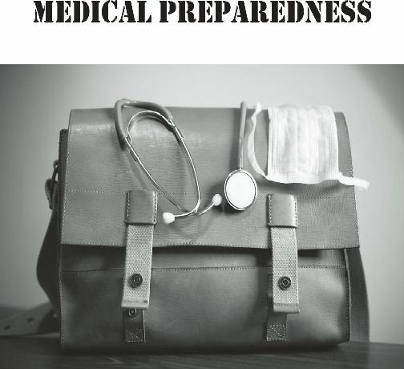
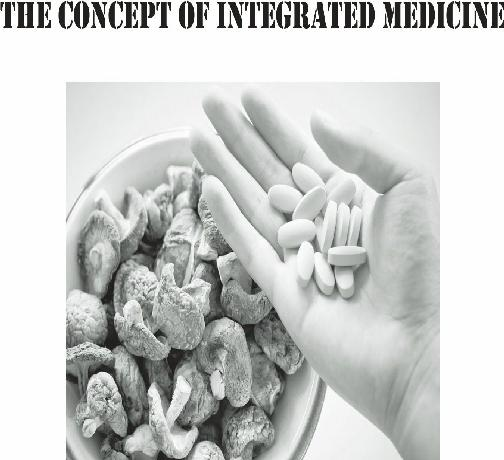
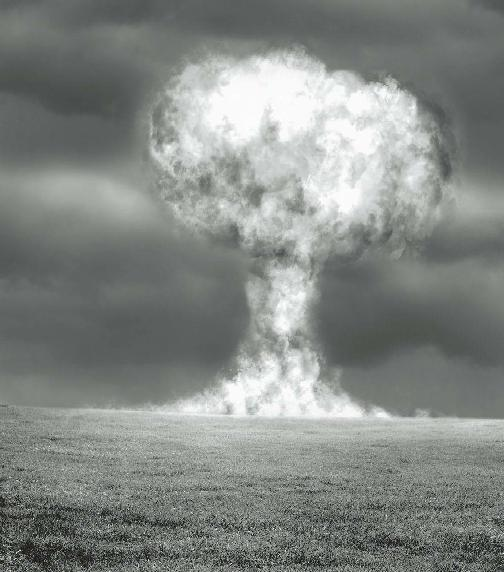
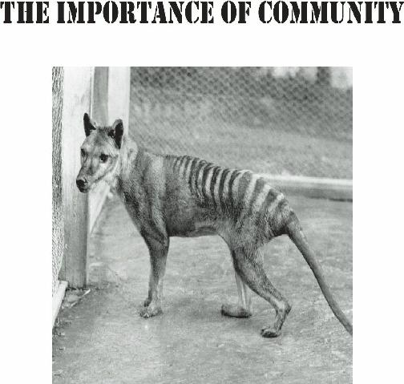
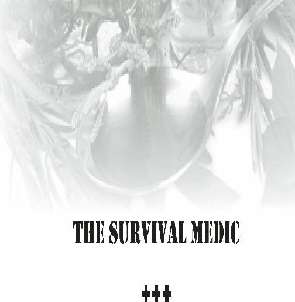
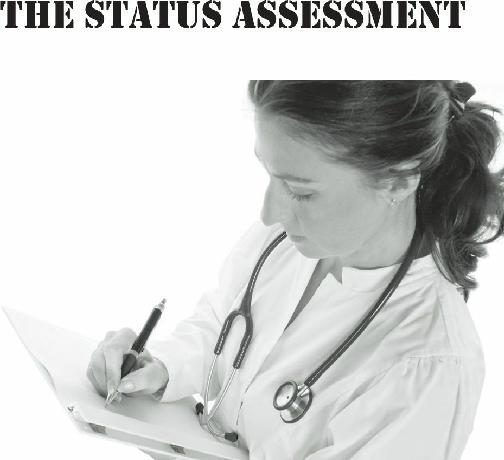

There are a variety of reasons that the majority of the
population chooses not to prepare for hard times. One reason relates to the perception that those that store food and other items are full of “Doom and Gloom”. Many in the general public still see the old-time camouflage-clad survivalists when they think of preparedness. Certainly, their portrayal in the media has done little to rehabilitate this image.
The term “Doom and Gloom” itself is full of the worst connotations; synonymous with despair and inaction, very few are willing to identify with what they consider to be a personality flaw. I don’t blame them.
Placing oneself into a category that always sees the negative in a situation is an unattractive option.
Yet, events are occurring in rapid succession. Our quality of life is being eroded even as we speak. The downward spiral may be starting, and it’s difficult for many to escape a negative attitude when they consider the future of our society. The problems are many, and the solutions are few (and they are painful, as well).
It is easy to choose the despair and inaction that goes with being a “Doom and Gloomer”; there’s not a lot of sweat involved in sitting in front of a television or computer, bemoaning the ills of modern-day civilization.
You don’t have to study or learn new skills; you don’t have to change your current lifestyle. You can just sit there and watch soap operas and reality shows.
Although there’s not a lot to like about the term “Doom and Gloom”, plenty of people are just fine with the apathetic, do-nothing attitude that goes along with it.
These are dangerous times. There are many (very many) who are in denial of this fact. These people could be cured of this denial simply by examining current events. “Storms of the Century” are occurring with regularity, and our infrastructure and reserves suffer as a result. Even many in the path of a disaster shake it off without a second thought, despite the loss of lives and property.
Besides those in denial, we return to the “Doom and
Gloomers”, fully aware of the situation but apathetically waiting for the apocalypse in a morose stupor. They will be no better off than the oblivious majority in times of trouble; worse, really, as they have been miserable for a longer time.
Furthermore, their negativity has soured the general public on the idea of preparedness. For the future of our society, this is probably the worst legacy of the “Doom and Gloom” mindset. The less prepared our citizens are for hard times, the more difficult it will be for there to be a future at all.
There is hope, however. The preparedness community understands that there can be rough seas ahead. They see the signs of the deterioration that have begun to erode the civilization that we have enjoyed for so long. Facts do not cease to exist just because they are ignored, and we may be on the brink of a meltdown.
So, why do today’s Preppers have an advantage over everyone else in terms of their potential for success in the future? Because, unlike the “Doom and Gloom”
crowd, they have evolved a new, more positive philosophy which we will call: “Doom and BLOOM”.
Adherents of the “Doom and Bloom” philosophy view negative current events with an unblinking eye.
There is neither denial nor sugarcoating of the factors that might send things south, perhaps in a hurry. This is, if you will, the “Doom” part. Instead of despair and inaction, however, the preparedness community has hope and determination. They see the danger, but also a very special opportunity: The opportunity to become truly self-reliant. This is the “Bloom” part. They see the challenges of today as a wake-up call. It might be an alarm, but it’s also a call to action.
Unlike others, the Self-Reliant Nation is positive that there are ways to succeed in the coming hard times.
They look to what has worked before there was high technology. They see how their grandparents and greatgrandparents succeeded, and they are learning skills that their ancestors had; skills that modern society has lost somewhere along the way.
“Doom and BLOOMERS” see the silver lining in those storm clouds, and are learning how to grow their own food, take care of their own health, and provide for their common defense. There’s a learning curve, to be sure, but every bit of knowledge that they can absorb will mean a better future for themselves and their loved ones. They are applying lessons from the past to assure themselves that future.
If the public’s perception of the preparedness community is one of “Doom and Bloom” rather than
“Doom and Gloom”, the association would be one with positivity and “can-do”, instead of negativity and inertia.
This would allow those who have prepared for tough times to serve as ambassadors of hope. With the acceptance of a positive viewpoint, a rebirth of a collapsed civilization would not only be possible, but would be inevitable. Armed with knowledge and skills to function in a power-down situation, “Doom and
Bloomers” would be the vanguard for the establishment of a self-sustainable society.
It is not just wishful thinking. It may be seem daunting to you, but it is well within your potential. It has been said that a 1000 mile journey begins with the first step. Take that first step today, and you’ll be ahead of the crowd in terms of assuring your survival and that of your loved ones.

A good percentage of the population has an uneasy feeling about the future. They have heard all the dire predictions of the last 50 years: The Soviet Union and the U.S. will destroy the world in a nuclear war. Y2K will make the entire power grid shut down.
It seems that, every year, there is a Doomsday prediction, and, every year, it fails to come to fruition
(whew!). Mayan Apocalypses have come and gone. A new series of predictions, even more dire, for the coming years are also out there. Yet, because we have cried “Wolf” so many times without an actual collapse event happening, the general public has become jaded.
Apathy mixed with inertia is their response. This is a dangerous attitude, as the wolf really may show up, eventually, and we are totally unprepared for him.
Have we reached the high water mark as a civilization? There are some signs that we have. One sure sign of the decline of a civilization is the inability to reproduce the technological achievements of its past.
Although we are still moving forward technologically in many areas, this sign is now visible. For example, we no longer have the capability or desire to put a man on the moon. The end of the Space Shuttle and International
Space Station programs now confines the human race to our own planet. This is not the best course of action for a planet with limited resources and a burgeoning population. Resources that were once earmarked for space travel, however, now are needed simply to keep people fed and the infrastructure in place. This sad state of economic affairs affects many nations that are experiencing difficulties just keeping their heads above water.
Society has faced this issue many times before, with many (now-extinct) cultures. Take Rome, for instance.
The Romans were able to develop indoor-plumbing, aqueducts, realistic art, etc. As the civilization went into decline, these advances were unable to be maintained, let alone expanded upon. At one point, collapse of the entire culture occurred. There were still “Romans”, but they were at a loss to understand how their ancestors were able to produce such miracles. This period was called a
“dark age”. We may consider ourselves immune, but we are not; we could, one day, find ourselves on the road to a dark age also.
In many polls, the majority of American citizens feel that the country is in decline. Once the world’s undisputed superpower, the prominence of the United
States has been in jeopardy for some time from far-away nations such as China and India. What was called the
“The American Century” may be slowly grinding to an end. By 2026, the United States is projected to be surpassed by China economically, and by India around
2050. Our leadership in science and technology
(especially military) will be challenged between 2020 and
2030, perhaps earlier. This descent has been projected to be gentle and gradual; yet, many of us remember the shocking rapidity of the collapse of the Soviet Union.
Why is the United States immune to that fate?
The “end of the world” can be objective, as in a large asteroid striking the planet, or subjective, as in the internet going down for an online business. Why is this subjective? To explain: Not so very long ago, there wasn’t an internet at all. We didn’t have mobile phones.
There were no microwave ovens or televisions and our cars didn’t have computers or cruise control. Most of us would consider the loss of these and other items the
“end of the world”, but life went on without these things just a few decades ago.
Life went on without credit cards, as well. If you didn’t have the funds for an item, you went without it.
This would be considered cruel and unusual punishment in today’s culture. Along with the myriad social services that many governments provide their citizens, we have developed a sense of entitlement; along with it has come a sense of complacency, as well.
Taken together, the possibility of the loss of these modern conveniences and “free” services is heinous to the general population. So heinous, indeed, that they reject the idea of a collapse simply by refusing to even think about the future. Yet, the future is coming, and we are facing uncertain times in a way that is not selfreliant.
What are the issues that could tip a fragile society into dark times? To fully delineate every scenario that can befall us would require a lot more paper and ink than we have, but let’s discuss some of them now.
The most likely, in my opinion, is economic collapse.
There are at least three major factors in the decline of the United States economically. They are: Trade deficits, the loss of the dollar as the world’s currency, and the decline in our status as the world’s technological innovator.
Once the world’s biggest exporter of goods, the
U.S. is now behind China and the European Union. The outsourcing of jobs, especially in manufacturing, has been constant and leaves the nation with less and less products that other countries need. For example, at the time of this writing there are no cellular phones produced in the United States at all. There seems to be no end to this trend, and the unemployment rate attests to it.
China and Russia are no longer using the dollar to transact business with each other, instead using their own currencies. The indiscriminate printing of more and more money to pay our debts has the entire world uneasy. Increasingly, we are seeing calls for an alternative to the current system. If the U.S. dollar ceases to be the world’s exchange currency, times will be very tough, indeed, for the country.
A country’s technological prowess is dependent on its ability to educate its citizens and to attract the best and brightest that are not yet citizens. Our ranking in math and science education is dropping in every survey.
Although we are still attracting students from other countries to our universities (50% of math and science graduate students are from elsewhere), they are no longer planning to live here after they graduate. They see better opportunities in their own countries.
All of the above, combined with an astronomical deficit and near-default, have left the United States as a fading superpower unable to pay its debts. Once the world ceases to use the dollar as its trade currency, no one will want to buy the treasury notes that have served as our way to pay interest on the debt. The costs of imports will rise as a result. To pay for all these rising costs, less money will go to repairing infrastructure, research, and military defense. Do you see where this is headed?
In all likelihood, this will be a gradual downward spiral. The average person will find it more difficult each year to pay his or her bills. Mortgage payments will be behind and more people will find themselves less able to fill up their gas tank or pay for their kids’ day care or college tuitions. We will all slowly become poorer than we were. Unemployment or under-employment will further rise, and more adult children will find themselves living at their parent’s house. This is already a reality for many folks.
Oil is another major factor where the United States is at a disadvantage. Consumption of foreign oil has risen to 45% in 2011, up from 36% 30 years earlier. The country consumes 18.8 million barrels of oil a day. Even the recent discovery of massive shale oil deposits and new technologies such as hydraulic fracturing (also known as “frack-ing”) will not allow the United States to produce the amount of oil to cover demand. The controversy over environmental impact will make certain of that.
The failure of the U.S. to develop alternative sources of energy leaves the country at the mercy of others.
Only 12% of our energy use comes from alternative
(solar, hydro, wind, etc.) methods. As other countries, such as China, continue to increase their energy use, the demand for oil rises and so does the price. As the dollar weakens, oil-producing nations may begin to demand payment by other means than U.S. dollars. This will further raise prices.
As low-cost oil becomes a thing of the past, the cost of travel (and export) will skyrocket. Trade will be seriously affected. As winter approaches, the economy stagnates as more and more money is required to simply heat the house. The logical endpoint is bankruptcy, universal poverty and the civil unrest it portends, and eventually, societal collapse.
This scenario is not the only road to perdition.
Influenza viruses, with their ability to mutate, are outpacing vaccines. With the ability to travel around the world in a day, outbreaks that would have been localized can become worldwide in a matter of weeks.
Widespread use of antibiotics in livestock is producing super-bacteria that can beat drugs that were effective against them previously. In India, strains of tuberculosis, a life-threatening lung disease, are appearing that no antibiotic has so far been able to treat.
Electro-Magnetic Pulses (EMPS), either natural
(solar flares) or man-made (terrorism) have the potential to shut down the power grid for decades. If a solar flare approaching the strength of the one that radiated the
United States in 1859 occurs, it would take 20 years to manufacture replacements of the transformers that would reinstate the electrical grid. Come to think of it, how would we even power the factories that make them?
Military adventures by various countries might ignite larger conflicts that could destabilize the world. Any number of “acts of God”, such as hurricanes, earthquakes, tsunamis, etc., might wreak their havoc. Of course, the likelihood of any one of these situations occurring is small, but what is the likelihood that NONE of these scenarios will occur sometime in your lifetime?
Your children’s lifetime?
Ok, enough Doom, how about some Bloom? If any of the above actually happens, there will be turmoil.
However, after a rocky (perhaps very rocky) period, there will be a transition to a steady state. This transition will probably be gradual with fitful starts and stops. The world may no longer be affluent, but it will be more selfsustainable.
The economy will be an insular one providing the essentials to local communities, using local materials.
You won’t be able to buy bananas in Montana during the winter. You will, however, be eating organically, and you could be able to grow that food yourself if you’re willing to learn how to.
Towards that goal, you’ll replace your waterguzzling lawn with vegetable gardens, fruit trees, and berry bushes. Water is just too precious to waste on a putting green. Any remaining grassy areas will become pasture land for goats, cows, and other livestock. By simple necessity, we will all become accomplished homesteaders or have skills that pertain to homesteading.
Self-sufficiency will be the order of the day. If something breaks, you will have learned how to repair it or will barter with someone who does. If you get sick, much of your medicine is already growing in your herb garden. Every family will have someone with the healing touch that will take responsibility for health care in the absence of modern medical facilities.
Is this a lot to swallow in one sitting? Sure it is. It’s a major challenge, to be sure, but it’s a challenge your great grandparents accepted. You’re just as smart as they were. You probably know even more about preventative medicine than they did, or at least have the resources today to learn. All you need is a little motivation and a positive attitude.
What’s the end result of all this? Your children will cease wanting to grow up to be runway models and rock stars, and will want to take up truly useful trades that make them an asset to their community. You might wind up living in a larger group; an extended family means more hands to share in the chores. Your children will spend a lot more time interacting with the rest of the family than they do now. Without a computer in front of them, they will actually get to know their loved ones, at last.
Also, there will be a sense of accomplishment. You will have seen that seed that you planted become a plant, and produce something that you can actually eat!
Furthermore, it’s there because YOU planted and cared for it. Society is so used to specialization today that most people feel like just another cog in a very big machine.
The author Robert Heinlein once said: “Specialization is for insects”. Humans are much better served being generalists.
In a self-sufficient world, you and your family will likely be the whole ball of wax, from beginning to end.
It’s a lot of responsibility, but the satisfaction you will have in a job well done will be something you rarely experience today.
So, not so bad, is it? Nobody’s anxious for society to start collapsing, but we can be ready for it and have a rewarding life no matter what happens. Keep a quiet determination and a positive outlook with regard to the present, get some skills under your belt, and you will guarantee yourself a productive future.

Some say that preparedness has its origin in the animal kingdom. Squirrels, foxes, chipmunks, and various other animals store or bury food which they dig up in the winter to get through lean times. Even though it is instinctual behavior for them, they are assuring their survival in a fashion that we can all learn from. When human beings realize that tough times are on the way, a relatively small percentage will start preparing, and these people are the ones that will be successful in times of trouble.
Preparedness is just the human way to store those nuts for the coming winter. We prepare, as mentioned before, to ensure that there will be food, medical supplies, and all the other things we need to survive. In a true survival situation, most of these necessities will be hard or impossible to obtain. By putting some time, effort and money into accumulating tangible items, we will be able to ensure our well-being if the worst happens. We certainly don’t want disasters to occur, but we want to be ready to withstand hard times.
It’s not just a sign of intelligence; it signifies a sense of self-preservation and social responsibility to be prepared. It’s an achievable goal, and you don’t have to be an accomplished outdoorsman to succeed. Anyone, regardless of their station in life, can be successful if they dedicate themselves to their objective.
We all, in the back of our minds, are concerned about the massive calamity: The perfect storm, solar flares, terrorist attacks, economic collapse or any of a number of events that could turn our fragile civilization into a nightmare. We call it “the end of the world as we know it” or “when the **** hits the fan”.
These events are horrific, to be sure, but “the end of the world” doesn’t have to be nationwide or worldwide;
it can just as easily be personal. The loss of a family member or one’s employment can easily throw a family into disarray. By storing food and other essential items, the “personal apocalypse” can be a bump in the road instead of the end of the road.
The preparedness community has a long history; as far back as biblical times, in fact. When the Hebrew
Joseph was in the Egyptian Pharaoh’s jail, he was known for his ability to interpret dreams. After hearing about this ability, Pharaoh sent for the young man, and asked him about a recurring dream that the Egyptian leader was having. In the dream, there were 7 fat, healthy cattle. There then came along 7 thin, diseased cattle and they devoured the healthy ones.
Joseph took this to mean that Egypt would experience 7 years of plenty followed by 7 years of famine. So he recommended that the Pharaoh spend the next 7 bountiful years accumulating grain; in that way, the people would be fed during the subsequent lean years. This was done, and Egypt was prosperous during a famine that left all of its neighbors destitute and starving. This was the very first recorded instance of
“prepping”! By following Joseph’s recommendation to prepare, we can be a prosperous Egypt instead of its unfortunate neighbors.
In the millennia since the time of Joseph, there have been many instances in which disaster has been averted in times of trouble by the concept of preparedness.
Farmers stored grain by erecting silos and “cribs”. Every army crossing into enemy territory stockpiled supplies in advance; if they didn’t, they would find themselves starving and out of ammunition in a hostile land. In every instance, those who prepared for times of crisis had a head start on everyone around them.
The modern survival community has people with varied skills but of like minds. These people are in the minority, but you will find them scattered everywhere:
In cities, suburbs and rural areas. They are diverse:
Progressives concerned about global warming prepare and so do conservatives concerned about excessive government. They cross racial, ethnic, and even national boundaries. They might disagree on some issues and they may not always be on the same page at the same time, but they are committed to the same goal. That goal is the continuation of the species, and a life for everyone in the group that is worth living. These are the people that will rebuild a viable society after a catastrophe.

The focus of this book is medical preparedness: That is, the ability to deal with sickness and injuries in tough times. Of course, anyone wishing to survive must first have food, water, and a shelter of some sort. A full stomach and protection from the elements will be the top priority. What, then, is next on the list?
After gathering food and building a shelter, many prepared individuals consider personal and home defense to be the most important priority in the event of a societal collapse. Certainly, defending oneself is important, but have you thought about defending your health?
In a situation where power might be down and normal methods of filtering water and cleaning food don’t exist, your health is as much under attack as the survivors in the latest zombie apocalypse movie.
Infectious diseases will be rampant in a situation where it will be a challenge to maintain sanitary conditions.
Simple activities of daily survival, such as chopping wood, commonly lead to cuts that could get infected.
These minor issues, so easily treated by modern medical science, can easily become life-threatening if left untreated in a collapse scenario.
Don’t you owe it to yourself and your family to devote some time and effort to obtain medical knowledge and supplies? You may be an accomplished outdoorsman and have plenty of food and your share of defensive weaponry. Yet, what would you say to a member of your family who becomes ill or injured in a remote and austere setting? Take two bullets and call me in the morning? The difficulties involved in a grid-down situation will surely put the health of your entire family or group at risk. It’s important to seek education so that you can treat infectious disease and the other ailments that you’ll see.
There will likely be a lot more diarrheal disease, for example, than gunfights at the OK corral. History teaches us that, in the Civil War, there were more deaths from dysentery than there were from bullet wounds.
Some say “Beans, Bullets and Band-Aids”, but I say
“Beans and Band-Aids, then Bullets”. I suppose, coming from a physician, that’s not too surprising. It makes perfect sense that you will, at one point, be responsible for healing the sick and treating wounds.
If you make the commitment to learn how to treat medical issues and to store medical supplies, you’re taking a genuine first step towards assuring your family’s survival in dark times. The medical supplies will always be there if the unforeseen happens, and the knowledge you gain will be there for the rest of your life. Many medical supplies have long shelf lives; their longevity will be one of the factors that will give you confidence when moving forward. Also, let’s not ignore their value as barter items in times of trouble.
When I say to obtain medical knowledge, I am also encouraging you to learn about natural remedies and alternative therapies that may have some benefit for your particular medical problem. I cannot vouch for the effectiveness of every claim that one thing or another will cure what ails you. Suffice it to say that our family has an extensive medicinal garden and that it might be a good idea for your family to have one, also. Many herbs that have medicinal properties grow like weeds, so a green thumb is not required to cultivate them. Many of them do not even require full sun to thrive.
It’s important to understand that some illnesses will be difficult to treat if modern medical facilities aren’t available. It will be hard to do much about those clogged coronary arteries; there won’t be many cardiac bypasses performed. However, by eating healthily and getting good nutrition, you will give yourself the best chance to minimize some major medical issues. In a survival situation, an ounce of prevention is worth, not a pound, but a ton of cure. Start off healthy and you’ll have the best chance to stay healthy.
I’m not asking you to do anything that your greatgrandparents didn’t do as part of their strategy to succeed in life. In a collapse, we’ll be thrown back, in a way, to that era. We should learn some lessons from the methods they used to stay healthy. I won’t dwell too much on natural remedies in this chapter, as there are chapters devoted to the subject in other parts of this manual.
Some members of my family wonder why I spend all my time trying to prepare people medically for a major disaster. Despite history teaching us otherwise, they are totally certain that there is no scenario that would take away, even for a while, the wonders of high technology. They see the hospital on their way to work and they have health insurance, what could happen? As such, my family is truly puzzled when they read my books and articles. They tell me that I can’t turn everyone into doctors, so why I should try?
So I asked myself: Am I trying to turn you all into doctors? No, there’s too much to learn in one lifetime;
even as a physician, I often come across things I’m not sure about. That’s what medical books are for, so make sure that you put together a survival library. You can refer to them when you need to, just as I do.
I AM trying to turn you into something, however:
I’m trying to make you a better medical asset to your family and/or survival community than you were before.
I firmly believe that, even if you have not undergone a formal medical education, you can learn how to treat the majority of problems you will encounter in a grid-down situation. You can, if you absolutely have to, be the end of the line with regards to the medical well-being of your people.
My efforts are not a fool’s quest. If you can absorb the information I’ll provide in this handbook, you will be in a position to help when the worst happens. Maybe, one day, you might even save a life; if that happens just once, my mission will have been a success.

Most of us have a relationship with a conventional healthcare provider. Many regularly see alternative healers as well. Both of these professionals have much to offer in terms of maintaining our medical well-being.
Yet, these two disciplines are often at odds with each other. This makes little sense to me, and certainly would be detrimental in a survival situation.
Having an inflexible attitude towards one branch of medicine or another is harmful to your family or survival group. As such, this book is not just geared towards standard medical treatment, but includes other natural healing options. It is not, however, a book solely on alternative medicine either. Those of you that are wholly against one or the other will probably be unhappy with it.
If so, I ask you to examine why you are so dead set against one or the other.
I once had a conventional (otherwise known as
“allopathic”) doctor challenge me to find ANY illness that natural remedies will cure or prevent. I have also heard an herbalist challenge the benefits of the vaccine that eliminated Smallpox from the world. In each case, no amount of evidence would budge either practitioner from their notion that any discipline but their own had any place in the treatment of patients.
This intransigence is akin to entering a fistfight with one hand tied behind your back. We must integrate the practice of medicine to include all methods if we are serious about maintaining the health of our people. The tools are there, so why not take advantage of all of them and not just some?
Besides having more options, you have more flexibility. Your approach to a patient can change, based upon what the problem is how serious it is. If you break your arm, for example, you will first turn to traditional medicine to set the bone and splint it. Afterwards, however, you might add other approaches to strengthen your immune system to speed the healing process. This method of treating the whole patient is termed “Holistic
Medicine”. In holistic medicine, we emphasize the need to look at multiple aspects of health, including the physical, nutritional, emotional, lifestyle and social. This practice helps you recover from the mental stress associated with your injury as well as the physical.
Don’t forget the part that spirituality plays in the recovery from an injury or illness. For many, it is an important component to the support necessary to foster the healing process. Studies show that those cancer patients with a positive attitude obtained through spiritual means survive longer and have a better quality of life.
Never underestimate the power of positive thinking and spiritual peace when considering the health of your loved ones. remember that you, as the medical caregiver, will be in charge of their emotional well-being as well as their physical health.
I say this not to endorse a specific religion, philosophy or ritual, but to encourage you to reach inside yourself. There is an inner strength there that many folks don’t know they have. If you have what it takes to be an effective medic, it will be most apparent in a crisis. If you’re medical prepared, you’ll already be halfway there.
Consider it just another weapon you’ll want in your medical arsenal.
If we ever enter truly bad times, we will have to do a lot of improvising. If the bad times last long enough, our stockpiled drugs will eventually run out. Unless we have the skill and equipment to distill essential oils from plants, they will run out also. Only by applying ourselves to the practice of integrated medicine, incorporating all of the various healing options available to us, will we be likely to weather the aftermath of a societal storm.
What, then, is my message to my colleagues in every medicial discipline? Simply that both alternative and traditional medical professionals should have respect for and encourage cooperation with each other. Both have much to contribute. Each should be willing to learn about the other and incorporate all that is useful from every possible avenue. Together, they can work to ensure a healthy society in good times or bad.



Wilderness Medicine
Long T erm Survival Medicine
What is wilderness (sometimes called outdoor)
medicine? I define it as medical care rendered in a situation where modern care, training and facilities are not readily available. Wilderness medicine would involve medical care rendered during wilderness hikes, maritime expeditions, and sojourns in underdeveloped countries.
There is no shortage of excellent books on this subject, some of which I mention in the reference section towards the end of this book.
The basic assumption in emergency medicine is that trained doctors and modern hospitals exist, but are unavailable at the time that medical care is required
(perhaps for a significant period of time). You, as temporary caregiver, will be responsible for stabilizing the patient. That means not allowing the injury or illness to get worse.
Your primary goal will be the evacuation of the patient to modern medical facilities, even though they might be hundreds of miles away from the location of the patient. Once you have transferred your patient to the next highest medical resource, your responsibility to the sick or injured individual is over, and you can go on your way. Emergency Medical Technicians or former military corpsman will recognize this strategy as
“Stabilize and Transport”.
Although principles of wilderness medicine have saved many lives, this approach is different from what I would call “long-term survival” or “collapse” medicine”.
In a societal collapse, there is no access to modern medical care, and there is no potential for such access in the foreseeable future. As President Harry Truman used to say, “The buck stops here”.
As a result of this turn of events, you go from being a temporary first-aid provider to being the caregiver at the end of the line. You are now the highest medical resource left, regardless of whether you have a medical diploma or not.
This fact will lead you to make adjustments to your medical strategy. You are now responsible for the care of the patient from beginning to end. As such, if you want to be successful in your new position, you will have to obtain more knowledge and training than you have now. You will also need more supplies, if you intend to maintain the well-being of your family or survival community, you will have to plan in depth to deal with their potential medical needs.
Medical training and education for non-physicians can include wilderness medical classes, Emergency
Medical Technician and even Military Medical Corps training. These courses presuppose that you are rendering care in the hope of later transporting your patient to a working clinic, emergency room or field hospital. As I said previously, “Stabilize and Transport”.
If you can make the commitment, this training is very useful to have; it’s much more likely that you’ll experience a short term deficit of medical assistance than a long term one.
Despite this, you must plan for the possibility that you will be completely on your own one day. That includes medically, so the way you think must be modified for a day when intensive care units and emergency rooms are going to be inaccessible. You won’t have the luxury of passing the sick or injured individual to a formally trained provider, so you must learn how to diagnose and treat medical problems and you must expect to be there from start to finish.
You will also have to understand how to treat certain chronic medical conditions. Even a paramedic, for example, is unlikely to know how to deal with an abscessed tooth or a thyroid condition. Many of these conditions are treated with drugs and high technology that may no longer be available.
Therefore, you must learn methods that will work in a power-down scenario; you may even have to reach back to older strategies that modern medicine might consider obsolete. Using a combination of prevention, improvisation, and prudent utilization of supplies, you should be able to treat the grand majority of problems you will face in a power-down scenario.
Although all of this might seem daunting, I’m not trying to scare you. In fact, I hope to impart enough information in this handbook to make you more confident. That confidence will come as a result of having planned for both short term disasters and long term ones. When you know what to do in any scenario, you will feel that quiet resolve that comes with the knowledge that you can do the job. You’ll be up to the challenge before you, and you’ll know it.

Let’s suppose that a calamity has occurred, and you have survived. The power grid is down, and is unlikely to be up again for years. You, however, have prudently stored food, medical supplies, farming and hunting equipment, and are safe in your shelter. You are a fine, young, strapping individual with no medical issues and are reasonably intelligent. Unfortunately, you haven’t the slightest idea what the first thing is that you should do to ensure your future health and survival.
The very first way to help assure your medical wellbeing is very basic. Don’t be a lone wolf! The forlorn creature in the above photograph is a Thylacine, sometimes called a Tasmanian wolf. Why did I choose this animal instead of a majestic red or gray wolf? I chose it because the Tasmanian wolf is extinct; if you try to go it alone in a long-term disaster situation, you will be too.
The support of a survival group, even if it’s just your extended family, is essential if you are to have any hope of keeping it together when things fall apart.
There will be activities that you would find hard to imagine in an austere setting. You will have to stand watch over your property. You will have to lug gallons of water from the nearest water source. You will, eventually, have to chop wood for fuel. Fill up a 5 gallon bucket with water and walk 100 yards with it (after staying up from midnight to four a.m. standing outside your house) and you’ll get the feel of what you might have to go through on a daily basis.
Being the sole bearer of this burden will negatively impact your health and decrease your chances of longterm survival. Exhausted and sleep-deprived, you will find yourself an easy target not only for marauding gangs, but marauding bacteria. Your immune system weakens when exposed to long-term stress; you will be at risk for illnesses that a well-rested individual could easily weather, but you can’t. Division of labor and responsibility will make a difficult situation more manageable.
You can imagine how much more possible this will be if you have a group of like-minded individuals helping each other. You can’t possibly have all the skills needed to do well by yourself, even if you’re Daniel Boone.
For example, we are a physician and nurse who are
Master Gardeners for our state, ham radio techs, and raise tilapia as a food fish. Sounds like we have some skills, but neither of us have done any carpentry or raised livestock. Neither have we ever been in charge of the security of others. There are those, however, who have done these things, but could use some of the skills we possess.
Put enough people together with differing skills, and you have put together, even in the middle of a city, a village. A village filled with people that will help each other in a crisis. A rugged individualist might be able to eke out a miserable existence in the wilderness alone, but a society can only be rebuilt by a community.
There’s no time like the present to communicate, network and put together a group of like-minded people.
The right number of able individuals to assemble for a mutual assistance group will depend on your retreat and your resources. The ideal group will have people with diverse skills but similar philosophies. Unless you are already in such a community, you may feel that it is impossible to find and put together a group of people that could help you in times of trouble. Luckily, that isn’t the case. There are many online forums that pertain to preparedness, Many, such as the American Preppers
Network and the International Preppers Network have forums that are specific to (U.S.) states or other countries. Start there and I guarantee you will find others like you.
It’s not enough to just be in a group, however. The people in that group must have regular meetings, decide on priorities, and set things in motion. Put together Plan
A, Plan B, and Plan C and work together to make their implementation successful. Preparedness means having a plan; have several plans in place for different turns of events. Keep lines of communication open so that all your group members are kept informed.
Practice What You Preach
We mentioned the importance of community in a griddown environment, but there is another essential part of preparedness. This part is rarely part of the planning process, even for the most self-reliant individual: To optimize your health PRIOR to any catastrophe occurring. If you, as medical caregiver, do not set the example of good health and fitness, how can you expect anyone else to? It’s time to practice what you preach.
To do this, you must accomplish the following goals:
Maintaining a normal weight for your height and age
Eating a healthy diet
Maintain good hygiene
Keeping physically fit
Eliminating unhealthy habits (smoking, etc.)
Managing chronic medical issues in a timely fashion
It’s important to “tune up” any chronic medical problems that you might currently have. You’ll want to have that blood pressure under control, for example. If you have a bum knee, you might consider getting it repaired surgically so that you can function at maximum efficiency if times get tough. Those with poor eyesight might consider having corrective procedures such as
LASIK performed to obtain the perfect vision that would be so useful in a survival situation. Use modern technology while it is available. Improve your chances of doing well if, God forbid, it ever becomes inaccessible.
Dental problems should also be managed before bad times make modern dentistry unavailable. remember how your last toothache affected your work efficiency?
If you don’t work to achieve all of the above goals, your preparations will be useless.
In a collapse situation, you will be building shelters, walking long distances to find food, tending fires, and many other activities that will test you physically.
Getting fit now will prepare you to accept those challenges. Also, doctors say to eat well and exercise for a reason; make sure you get good nutrition and watch those calories. This doesn’t mean that you have to run marathons. Even just a daily walk around the block is going to help keep you active and mobile.
This philosophy is pertinent for your mental health and acuity as well. You can’t go for long without food and water, but many people will go without a new thought for years on end. Just doing crossword puzzles or reading a newspaper will help keep your mind sharp.
remember that a mind is a terrible thing to waste. Don’t waste yours.
If you have bad habits, work to eliminate them. If you damage your heart and lungs by smoking, for example, how will you be able to function in a situation where your fitness and stamina will be continually tested? If you drink alcohol in excess, how can you expect anyone to trust your judgment in critical situations? The same goes for recreational drugs.
Paying careful attention to hygiene is also an important factor for your success in times of trouble.
Those who fail to maintain sanitary conditions in their retreat will have a difficult time staying healthy.
Infections that are usually seen only in underdeveloped countries will become commonplace. As such, an essential part of your supply storage will be simple items such as soap and bleach.
These two basic strategies, fostering community and practicing preventive medicine/fitness, will take you a long way in your journey to preparedness. They don’t cost anything to speak of, and will give you the best chance of succeeding if everything else fails.


What You Won’t Have

What You Will Have

In a long-term survival situation, it will be an extremely fortunate family or group that has a physician or other formally trained medical professional among its members. When there is no doctor, someone in your group should be assigned the responsibilities of group medic. That person will make the difference between success and failure for a community under duress.
Some people feel that becoming a healthcare provider is a daunting task, and it certainly will be a challenge to accumulate adequate medical stores and obtain the medical knowledge necessary to be effective.
Those who will step up and take responsibility for the medical well-being of their loved ones will be special individuals, with a special mission.
If you have been chosen to pick up the flag, your first assignment is to get some training. Some of it will be book learning, and some will be hands-on; the more you learn, the more comfortable you will be in your new role.
Start by studying basic first aid and have a good book on family medicine in your library. A good approach would be to learn as much anatomy and physiology as possible. Anatomy is the blueprint of the body, and physiology is the operating manual. With a working knowledge of these two subjects, you’re in a better position to understand disease and injury. This is essential for you to become a successful medic for your group.
Don’t forget alternative disciplines such as herbalism. When the commercial medicines run out, you will need a good base of knowledge about plants in your backyard that may have medicinal benefits. Many times, the medic will cultivate favorite herbs specifically for the purpose of having them available in times of trouble.
The most important asset needed to become a competent healthcare provider for your group is just having common sense. A sensible person with good medical supplies, a few medical books and a willingness to learn will be an effective medical resource.
It helps to have a calm demeanor, as sick or injured people take comfort from a focused and level-headed caregiver. Another useful attribute of a good medic is the dedication to teach other members of his/her group some of the skills that he/she learned. One person can’t be everywhere at once, and the basics aren’t that hard to teach. Cross-training is extremely important, as the medic may, one day, need a medic!
Confidentiality is another important factor to success as a medical resource. You will have to interview your group members so that you’ll have all the information you need to keep them healthy. Sometimes that information includes things that your patient doesn’t want to be made public. You must never disclose anything that would make others see you as untrustworthy. If you don’t have the trust of the community you serve, your effectiveness drops significantly.
There is one last essential characteristic of the successful medic: Self-preservation! This may sound strange to you, but you are an indispensable resource to your entire group. If you place yourself frequently in harm’s way, you will eventually find yourself as the patient more often than you or anyone else would like.
Always assess the scene of an injury to determine if you can care for the victim without placing yourself in undue danger. You must abolish all threats; if someone has a gunshot wound, it stands to reason that there’s a guy with a gun out there! Always remember that you do a disservice to your survival community by becoming the next casualty.

The first thing that the survival medic should perform in preparation for a collapse situation is a status assessment. A number of questions must be asked and answered:
What Will Your Responsibilities Be?
It goes without saying that, as group medic, you will be responsible for the medical well-being of your survival community. But what does that mean? It means that, as well as being the Chief Medical Officer, that you will be:
Chief sanitation officer: It will be your duty to make sure that sanitary conditions at your camp or retreat don’t cause the spread of disease among the members.
This will be a major issue in an austere setting, and will cause the most medical issues in any survival group.
Some of your responsibilities will relate to latrine placement and construction, others will relate to the supervision of appropriate filtering and sterilization of water. Assurance of proper cleaning of food preparation surfaces will also be very important, as will be the maintenance of good personal and group hygiene.
In areas of extreme climate, it is important to ensure that all members have adequate shelter. Careful attention to these details will be part of a preventative program that will keep your family or community healthy.
Chief dental officer: Medical personnel in wartime or in remote locations report that patients arriving at Sick
Call complained of dental problems as much as medical problems. Anyone who has had a bad toothache knows that it affects concentration and, certainly, work efficiency. You will need to know how to deal with dental issues (toothaches, broken teeth, lost fillings) if you are going to be an effective medic. Part of your planning will be the accumulation of appropriate dental supplies.
Chief counselor: It goes without saying that any societal collapse would wreak havoc with peoples’
mindsets. You will have to know how to deal with depression and anxiety as well as cuts and broken bones.
You will have to sharpen your communication skills as much as your medical skills. A good healthcare provider also understands, as mentioned earlier, the importance of confidentiality in all their patient contacts.
Medical quartermaster: You’ve done your job and accumulated medical and dental supplies, but when do you break them out and use them? When will you dispense your limited supply of antibiotics, for example?
In a collapse situation, these items will no longer be produced, due to the complexity of their manufacture.
Careful monitoring of precious supply stock and usage will give you an idea of your readiness to handle medical emergencies for the long term.
Medical Archivist: You are in charge of writing down the medical histories of the people in your group.
This record will be useful to remember all the medical conditions that your people have, their allergies, and medications that they might be taking. If your community is large, it would be almost impossible to memorize all of this information.
Also, your histories of the treatments you have performed on each patient are important to put into writing. One day, you might not be there to render care;
your archives will be a valuable resource to the person that is in charge when you’re not available. Until that day, however, these histories must remain confidential.
Medical education resource: You can’t be in two places at once, and you will have to make sure that those in your group have some basic medical knowledge. It’s important that they can take care of injuries or illness while you’re away. Also, providing all members an education in preventing injuries and infectious disease will give you a head start towards having a healthy survival community.
These responsibilities are many, but may be modified somewhat by the makeup of your group. If you have a pastor or other clergy in your group, they can take some of the burden of psychological counseling away from you. If you have someone skilled in engineering, water treatment, or waste disposal, they might be able to use their knowledge to help maintain sanitary conditions at the retreat, or assure healthy filtered water. Be sure to take whatever help you can get.
What Scenario Are You Preparing For?
It’s important to accumulate medical supplies and knowledge that will work in any collapse situation, but what are you actually expecting to happen? Your preparations should be modified to fit the particular situation that you believe will cause modern medical care to be unavailable. There are many possible scenarios that could cause times of trouble, and each of them requires some specialized planning. Your readiness to deal with the most likely illnesses or injuries will increase your effectiveness exponentially.
If you feel that we are on the verge of an economic collapse, you probably believe that the reliable transport of food from farms to the public will no longer exist
(nobody is paying the truckers). In that case, malnutrition will be rampant. Your responsibility as medic would be to make sure that your group’s food storage includes everything required to give good nutrition. Stockpiling vitamin supplements, commercial or natural, would be a good strategy in this situation.
Even if not taken daily, vitamin supplements may be helpful in preventing diseases caused by deficiencies.
Knowledge of what nutrients are present in local plant life will be useful. Take the following historical example: In the 1500s, a Spanish exploration party was dying of scurvy (Vitamin C deficiency) in the middle of a pine forest. Native Americans came upon them and took pity on their situation. They walked to the nearest pine tree and picked some green pine needles. They made a tea out of them and nursed the Spaniards back to health. They knew that pine needles were rich in Vitamin
C. That knowledge will be useful for you, as well.
Are you concerned about civil unrest? In that case, tailor your supplies and training to equip you to deal with possible traumatic injuries. Stock up on bandages and antiseptics. Other specialized equipment such as splints and blood clotting agents would be necessary in this circumstance.
Many people are concerned about the possibility of a pandemic. If you’re worried about a “super flu”
descending on your area, stock up on masks and gloves as well as antiviral drugs. Figure out a quarantine strategy and how to put together a sick room that will decrease exposure to healthy family members.
How about a nuclear reactor meltdown? To take this to extremes, perhaps you live near an army base, a large city or a nuclear plant and you’re concerned about a terrorist group setting off a nuclear bomb. In that scenario, you’ll have to know how to protect your group from radiation, and how to build an effective shelter.
You’ll want medications like Potassium Iodide to counteract some of the long-term effects of radiation on the thyroid gland.
So, you can see that your supplies and training change somewhat, depending on the course of events.
Discuss these scenarios with your family or community, and plan accordingly.
How
Many
People
Will You
Be
Responsible For?
Your store of medical supplies should correlate well with the number of persons that you will be responsible for.
If you have stockpiled 5 treatment courses of antibiotics, it might be enough for a couple or a sole individual, but it will go fast if you are taking care of 20 people.
remember that most of those people will be out performing tasks that they aren’t used to doing. They will be making campfires, chopping wood and toting gallons and gallons of water. You’ll see more injuries like sprains and strains, fractures, lacerations, and burns among those people if they are forced to perform activities of daily survival.
It only makes sense to accumulate as many supplies as you possibly can. You might wind up dealing with more survivors than you expected; in reality, you almost certainly will, so you can never have too many medical supplies. The biggest mistake that the survival medic will make is the underestimation of the number of people that will appear on their doorstep in times of trouble. Make allowances for more people than you currently expect.
Don’t be concerned that you have too much stored away. Any “excess” items will always be highly sought after for barter purposes. You might spend your money on buying physical silver and gold, but you won’t be able to set a broken bone or wrap a sprained ankle with
“precious” metals. Food and medical items will be more valuable than mining stocks in hard times. Don’t become complacent just because you have a closet full of bandages; they will be used more quickly than you think.
The bottom line is simple: Always have more medical items on hand than you think are sufficient for the number of people in your group.
What Special Needs Will You Have To
Care For?
The special issues you will deal with depend on who is in your group. The medical needs of children or the elderly are different from an average adult. Women have different health problems than men. You will have to know if group members have a chronic condition, such as asthma or diabetes. Failure to take things like this into account could be catastrophic. For example, would you be prepared if you found out a group member required adult diapers AFTER a calamity occurs?
Be certain to interview all of your group members, so that you won’t be surprised that this person has thyroid problems, or that person has high blood pressure. All of these variables will modify the supplies and medical knowledge you must obtain. Encourage those with special needs to stockpile materials that will help keep them well. Encourage them to have a frank discussion with their physician and obtain extra drug prescriptions in case of emergency (and have them filled

in advance).
What Physical Environment Will You
Live In?
Is your retreat is a cold climate? If so, you will need to know how to keep people warm and how to treat hypothermia. If you’re located in a hot climate, you will need to know how to treat heat stroke. Is your environment wet and humid? People who are chronically wet generally don’t stay healthy, so you will have to have a strategy to keep your group members dry. Are you in a dry, desert-like environment? If you are, you will have to provide strategies for providing lots of clean water.
Some people live in areas where all of the above conditions exist at one point or another during the year.
These considerations might even be a factor in where you would choose to live if a collapse situation is imminent.
How Long Do You Expect To Be The
Sole Medical Resource?
Some catastrophes, such as major damage from tornadoes or hurricanes, may limit access to medical care for a relatively short period of time. A societal breakdown, however, could mean that there is no availability of advanced medical care for the foreseeable future.
The longer you will be the healthcare resource for your group, the more supplies you will have to stockpile and the more varied those supplies should be. If the catastrophe means a few weeks without medical care, you probably can get away without, for example, equipment to extract a diseased tooth. If it’s a true longterm collapse, however, that equipment will be quite important. Spend some time thinking about all the possible medical issues you might face as the end of the line caregiver for your family. Prepare a plan of action to handle each one. remember to plan for issues that may occur further down the road, such as birth control issues for a daughter who has not yet reached puberty.
How Do You Obtain The Information
You Will Need To Be An Effective
Healthcare Provider?
A good library of medical, dental, survival and nutritional books will give you the tools to be an effective medic.
Even if you were already a doctor, let’s say a general practitioner, you would need various references to learn how to perform surgical procedures that you ordinarily would send to the local surgeon. If you’re a surgeon, you would need references to refresh your knowledge of the treatment of diabetes. Even the most resourceful homesteader can’t know everything!
Luckily, medical reference books are widely available, with tens of thousands on sale at online auction sites like EBay or retail sites like Amazon.com on any given day. Often, they are deeply discounted. If money is tight, many libraries have a medical section and many local colleges have their own medical library.